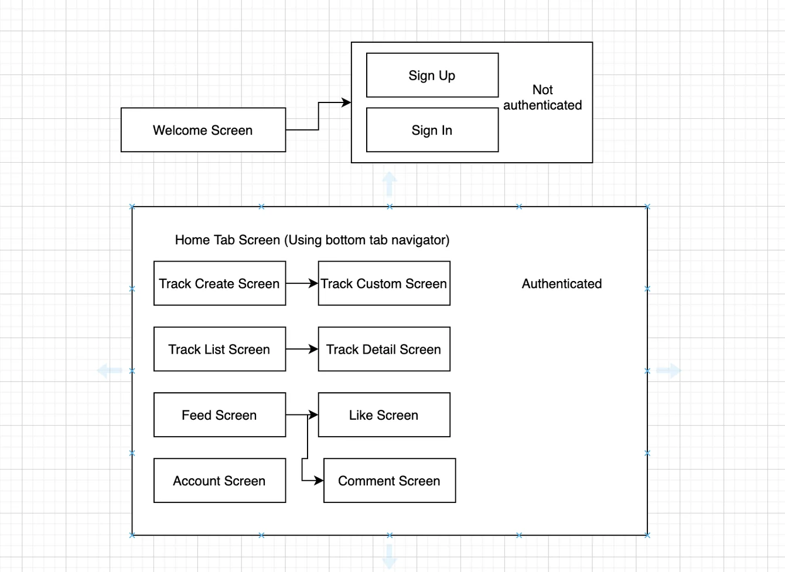
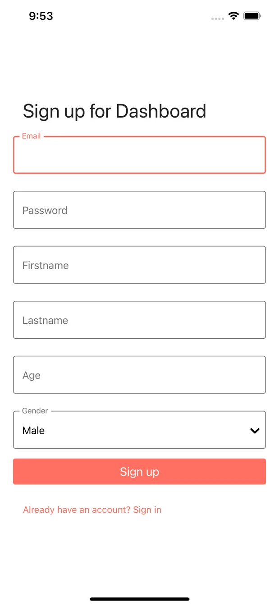
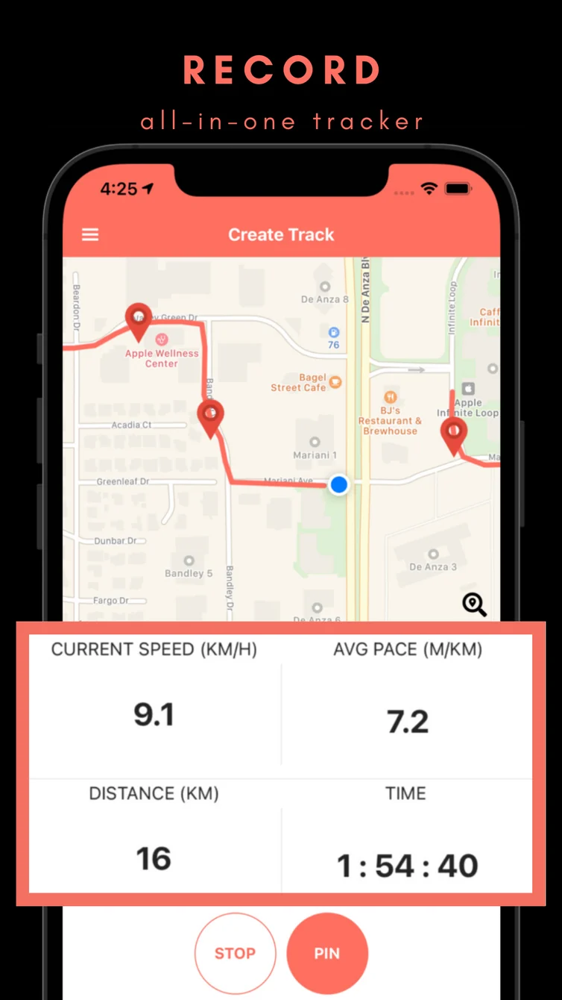
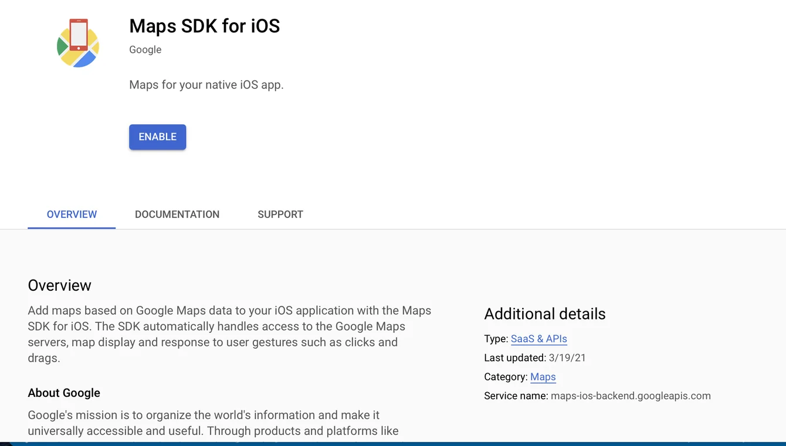
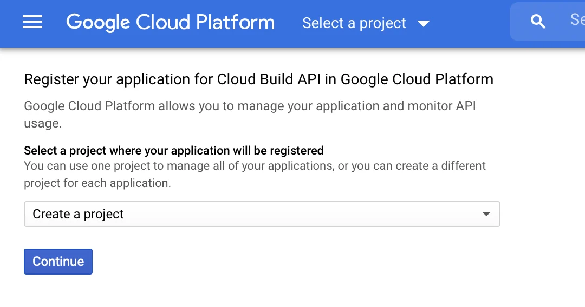
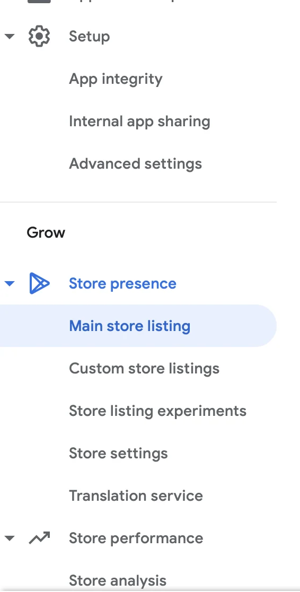
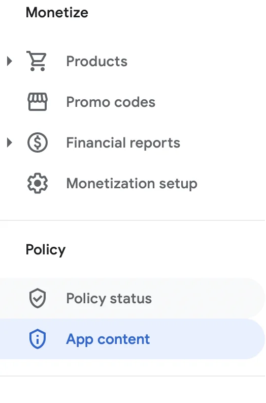

It has been a while since I have written everything. I have some new projects since the winter and I will try to introduce to you guys some of the newest projects I have been working on since the spring semester.
Right after the finals are over, I have the time to create my first mobile application called Dashboard: Track your training (Link Here) and upload it to Appstore and Google Play. It was quite a challenging time and I wanted to share to you some basics on how to do it and some lessons I learned from deploying my application.
Here are the big parts that will be covered in this post. Notice that I will try not to go into too much details in this post because it will be super long. Instead, I will walk you through the tips, tricks and lessons I learned by a hard way when I was doing my app. If you want to take a look at the source code, feel free to see it here
- Introductions
- Frontend
- Explaining the core feature: Location Tracking
- Backend
- Deploying to Appstore and Google Play Store
Introductions
Introductions of the app
Explaining the name Dashboard = Dash + board. This name comprises of 2 of the main features of the app. You can track your training routes, pin your favorite locations and share your selfies to a board (or your Feed). It is a free sports management app with a friendly UI design that accurately records your training routes while helping you pin locations at ease and share your achievements with the DASHBOARD network.
What technologies did I use?
-
Expo React Native. The front end of the app is built based on Expo React Native. It is really convenient and handy in handling the libraries. However, 1 downside is that we cannot control the native files and rely entirely on expo
-
Google Map API. One of the location features used Google Map API
-
Expo Location. This is the main library used for building the location tracking function
-
Cloudinary. This is used to store images uploaded to the app
-
MongoDB and Express. This is the combo for backend that I usually use to build fullstack apps
-
Google App engine. This is where I host my server
Frontend
Now we will be entering the main part building the actual app. Here are the components of our app. I will split into 2 parts: the Side Screens and the core feature Location Tracking
Side Screens
- Explaining Navigation v5 of React Native
- Building Welcome and Authentication Screens
- Building Account Screen
Explaining Navigation v5 of React Native
The core of every app is navigation. In the newest version of react navigation v5, there has been a lot of changes to the navigation. Below is the map of our navigation. As you can see, we start from the welcome screen and the login/signup screen if we are not authenticated. The login and signup screen will be a stack navigator to move back and forth.
We will do a quick check to see if the user is authenticated. If they are not, they will be in the login, signup screen. If they are, they will be navigated to the Main screen.
{
authState.userToken != null ? (
// <HomeTabScreen/>
<Drawer.Navigator
initialRouteName="TrackCreate"
drawerContent={(props) => <DrawerContainer {...props} />}
>
<Drawer.Screen name="TrackCreate" component={HomeTabScreen} />
</Drawer.Navigator>
) : (
<AuthStackScreen />
);
}

In the main screen, there will be a bottom tab navigator. This will help us navigate between 4 screens: Track Create, Track List, Feed and Account.
- Track Create: after we finished recording a track, we will move to Track Custom Screen so we will need a stack navigator for these 2 screens
- Track List: after we clicked on a track on the track list, we will move to the track details. Thus, we will also need a stack navigator for these 2 screens.
- Feed and Account Screens stand by their own so we just need to add them to the Bottom Tab Navigator
Quick Tip: How to customize the screen header
You HAVE to transform your screen into a stack screen by itself to customize the screen header.
<HomeTab.Screen
name="Feed"
component={FeedCreateStackScreen}
options={{
title: "Feed",
}}
/>
Here I created the FeedCreateStackScreen for my Feed Screen to be able to customize my screen title.
Building Welcome and Login/Signup Screen
Here is a look of the Login/Signup Screen:

Notice
These screens have basic functions to authenticate. I have already written a post about authenticating using JWT token Here. However, we need to make sure that will use SafeAreaView and ScrollView to make it scrollable when the keyboard is opened (so that the keyboard doesnt cover the inputs)
<SafeAreaView style={styles.container}>
<View>
<ScrollView
showsVerticalScrollIndicator={false}
>
...
Building Account Screen
This is where the users can customize their profile. This screen has some basic features like changing avatar and viewing the personal information.
Here it gets to a point where you will need to ask the users for permission to access their photos and cameras. This is the first permission we will need and luckily, we have expo-image-picker and expo-camera to help us. Below is how we usually request for permission to access the media library (photos) from the user in Expo.
useEffect(() => {
(async () => {
if (Platform.OS !== "web") {
const { status } =
await ImagePicker.requestMediaLibraryPermissionsAsync();
if (status !== "granted") {
alert("Sorry, we need camera roll permissions to make this work!");
}
}
})();
}, []);
Notes we should set the quality to 0.1 or lower to reduce the loading time for our app. We should also set the base64 equal to true to store the image later
const pickImage = async () => {
let result = await ImagePicker.launchImageLibraryAsync({
mediaTypes: ImagePicker.MediaTypeOptions.All,
allowsEditing: true,
aspect: [4, 3],
quality: 0.1,
base64: true
})
if (result.cancelled) {
return
}
There are many ways to store your images but I choose to use Cloudinary because their free package is really nice. What Cloudinary does is that it will create an image based on your base64 link and upload that to their storage. After that, you can save your profile image link to your database and get it down whenever you want.
let base64Img = `data:image/jpg;base64,${result.base64}`;
let data = {
file: base64Img,
upload_preset: "iqtz1hm2",
};
await fetch(CLOUDINARY_URL, {
body: JSON.stringify(data),
headers: {
"content-type": "application/json",
},
method: "POST",
});
Explaining the core feature: Location Tracking
This is probably the most important feature of the app. Location Tracking is pretty complicated and I will break it down for you in some parts
- Updating time continuously
- Create a Track reducer to handle recording new tracks
- Foreground Location
- Background Location
- Displaying it on a Map
- Customize a Track after saving
- Posting it to Feed
Updating time continuously
This is probably the easiest part. As you can see in most tracking app, there is a clock running continuously. I did this by having 3 states: hour, minute and second. When we start recording, we will increase second by 1 (every second) by using a setInterval function along with a useEffect
useEffect(() => {
let interval = setTimeout(() => setSecond(second + 1), 1000)
Then, if the second state is >= 60, it will be resetted to 0 and the minute state will be increased by 1. Similarly, if the minute state is >= 60, it will be resetted to 0 and the hour state will be increased by 1.
Create a Location context to handle recording new tracks
This is where we handle all the functions that are related to handling recodring the Locations. This can include startRecording, stopRecording, and addLocation. These are 3 things that are most important to the app. Everytime the user clicks Record, we will change the state to startRecording. Similarly, if they click Cancel, we will cancel recording.
Important Notes When we are recording locations, we will add a new location (this is a combination of longitude, latitude, currentSpeed, accuracy level, ...) every second to our state using the addLocation function.
const addLocation = (dispatch) => {
return (location, isRecording, speedLst) => {
dispatch({ type: "add_current_location", payload: location });
if (isRecording) {
dispatch({ type: "add_location", payload: location });
dispatch({ type: "add_speed", payload: location.coords.speed * 3.6 });
dispatch({
type: "add_current_speed",
payload: location.coords.speed * 3.6,
});
}
};
};
This is how the recording look like:

Foreground Location
Foreground location means that recording the location while your phone is opened and you are opening the app. This might not be too useful for an app that tracks your location while you are training because when you are cycling or running, you might lock your phone or turn it off. However, we will still have to include this.
const startWatching = async () => {
try {
const { granted } = await requestPermissionsAsync();
if (!granted) {
throw new Error('Location permission not granted');
}
subscriber = await watchPositionAsync(
{
accuracy: Accuracy.BestForNavigation,
timeInterval: 3000,
distanceInterval: 30,
},
callback
);
Here we will use a function that was given to us by the expo library. This is the watchPositionAsync. It will basically record your location every 3 seconds or you have travelled 30 meters. Therefore, the recording might be a bit inaccurate when you barely moved or sit still. Make sure that you must ASK FOR THE USER PERMISSION to use Foreground location
Background Location
Background location means that recording the location while your phone is not opened or your screen is locked. This is the most complicated part of this app and it took me days to set up. This is because both IOS and Android have very strict protocols for asking background locations.
When we are using background location, we will need to ASK FOR USER PERMISSION again but this time when you switch the app to the background it will prompt something like either allow using location while using the app or always allow using location
const startLocationTracking = React.useCallback(async () => {
let res = await Permissions.askAsync(Permissions.LOCATION);
if (res.status !== 'granted') {
console.log('Permission to access location was denied');
}
await Location.startLocationUpdatesAsync(LOCATION_TRACKING, {
accuracy: Location.Accuracy.BestForNavigation,
timeInterval: 3000, //update every second
distanceInterval: 50, //update every 10 meters,
foregroundService: {
notificationTitle: 'Using your location',
notificationBody: 'To turn off, go back to the app and switch something off.',
},
pausesUpdatesAutomatically: true
});
For the background location, we will use the startLocationUpdatesAsync from expo library. This will track the location every 3 seconds or you have travelled 50 meters.
Notes 1: For Android, you will need to have a modal or a pop-up to explain why you want to use the users' background location
Notes 2: For Android, your app will need to have permission from Google Review to be able to see the background location functions
Notes 3: For IOS, the pop up to ask for background location will be quite slow so in the first few tries it might not be up.
There will be a lot more notes and tricks on background location in the parts later when we try to deploy it to App Store and Google Play Store
Displaying it on a Map
This is quite easy since we can take advantage of the react native maps. We can use the MapView component to display a map in both IOS maps and Google maps.
<MapView
style={{ height: isRecording ? "50%" : "80%", flex: 1 }}
region={currentLocation && {
...currentLocation.coords,
latitudeDelta: 0.005,
longitudeDelta: 0.005,
}}
showsUserLocation={true}
followsUserLocation={followsUserLocation}
Then we will use a Polyline Component also from react native maps to display our tracks on the screen. The locations variable here is our locations state. This is an array of small Location objects (with latitude, longitude, accuracy, ...) which I have explained above.
<PolylineComponent locations={locations} />
This is the screen where we are drawing the tracks on the map.
Pin a location
This is the innovative part of the app when compare to other apps. When we travelled to a new place, you can pin the current location and the app will display immediately the current address to the screen. This uses Google Maps API to get the most accurate current address.
const reverseGeocodeAPI = async (latlng) => {
const res = await axios.get(`${BASE_URL}?latlng=${latlng}&key=${API_KEY}`);
return res.data.results[0].formatted_address;
};
Specifically, we use the reverseGeocode API to achieve this functionality. In order to set up and use Google Maps API, you will first need a Google API key.
-
Go to Google Cloud Console and create 2 new API keys at the Credentials page: 1 for IOS and 1 for Android
-
Restrict 1 key to Android App and the other to IOS app
-
Enable the Google Maps SDK for both IOS and Android in the market page

Now you have successfully set up the API keys and are ready to call the Google APIs
Customize a Track after saving
This is basically adding some information for the track before saving it, you can add name, type, descriptions and an image of your track. In order to upload image here, we once again need to ask for the users permission to access the media library and have to upload to Cloudinary
Notice: because there will be a lot of inputs in this screen and you dont want the keyboard to cover your inputs, make sure to use KeyboardAvoidingView for IOS:
{Platform.OS === "ios" ? (
<KeyboardAvoidingView style={{ flex: 1 }} behavior="padding">
And do this for Android:
<KeyboardAvoidingView keyboardVerticalOffset={-1000} style={{ flex: 1 }}>
Posting it to Feed
The Feed screen is basically a social media screen where it will list out all the current posts and each post will have avatar, name, descriptions, image and like, comment and share sections like a normal Facebook post.
This can be done by getting all the posts from the database and display it to the screen
useEffect(() => {
fetchPosts();
}, [isFocused]);
useEffect(() => {
if (state) {
setSortedState(state.slice().sort((a, b) => b.createdAt - a.createdAt));
}
}, [state]);
What I do in the second useEffect is that I sort the post in the order that newest posts are on top. I will explain more about the schema of each post and comment and like cause it will be quite complicated
Backend
Setting up Express and some libraries
In Express, we used some standard libraries such as express, bodyParser and mongoose (for handle MongoDB). To connect to MongoDB, I have already written a blog Here. You guys can check it out.
const express = require("express");
const mongoose = require("mongoose");
const bodyParser = require("body-parser");
Notice that, we use this config to extend our request data size:
app.use(
express.urlencoded({
limit: "50mb",
parameterLimit: 100000,
extended: true,
})
);
Explaining the routes
There are 3 types of routes:
- Authentication Routes. This is the authentication router using JWT Token. It is really common and I will not mention it in details here
- Track Routes. These are the routers that you will use to save your track details to MongoDB
This is an example of how to use the track routes to find all tracks of a user
router.get("/tracks", requireAuth, async (req, res) => {
const tracks = await Track.find({ userId: req.user._id });
res.send(tracks);
});
- Posts Routes. These are the routers to control the posts that are posted to the Feed. Below is an example of how to get a post with a specified id:
router.get("/posts/:id", requireAuth, async (req, res) => {
const id = req.params.id;
const query = { _id: id };
const post = await Post.findOne(query);
try {
res.send(post);
} catch (err) {
return res.status(422).send({ error: err.message });
}
});
Explaining MongoDB Schema
In this part, I will explain in detail the schemas of each type of routes.
The user schema:
The user schema consists of information like: email, password (encrypted), firstName, lastName, age, gender, image (link to avatar image)
Note 1: we can set the image (avatar link) of a default image before the users change their avatar
Note 2: In the user model, we will add a method to help comparePassword so that when we login, the password will be compared with the encrypted password saved in the database
userSchema.methods.comparePassword = function (candidatePassword) {
const user = this;
return new Promise((resolve, reject) => {
bcrypt.compare(candidatePassword, user.password, (err, isMatch) => {
if (err) {
return reject(err);
}
if (!isMatch) {
return reject(false);
}
resolve(true);
});
});
};
The Track Schema
Here we need to understand the detailed information of each location that we saved. Each location we saved will be a POINT schema with information like current latitude, longitude, altitude, accuracy, ...
const pointSchema = new mongoose.Schema({
timestamp: Number,
coords: {
latitude: Number,
longitude: Number,
altitude: Number,
accuracy: Number,
heading: Number,
speed: Number,
},
});
Therefore, each track will be an list of consecutive points so a track schema will look like this:
const trackSchema = new mongoose.Schema({
userId:{
type: mongoose.Schema.Types.ObjectId,
ref: 'User'
},
locations: [pointSchema],
Notice that we will also need a userId in each track. This will be a reference to the user table. This will help us keep track of whose track is this.
The Post Schema
Each post will contain likes, comments, and a map of the track we saved. Therefore, we need userId as a reference of the user table to know whose post is this. We also need trackId as a reference of the track table to know what track is this. Lastly, we need the likes and comments schema to be lists of likeSchemas and commentSchemas.
These are the likeSchema and commentSchema
const commentSchema = new mongoose.Schema({
userId: {
type: mongoose.Schema.Types.ObjectId,
ref: "User",
},
username: String,
text: String,
avatar: String,
});
const likeSchema = new mongoose.Schema({
userId: {
type: mongoose.Schema.Types.ObjectId,
ref: "User",
},
username: String,
avatar: String,
});
const postSchema = new mongoose.Schema({
userId:{
type: mongoose.Schema.Types.ObjectId,
ref: 'User',
},
trackId:{
type: mongoose.Schema.Types.ObjectId,
ref: 'Track'
},
likes: {
type: [likeSchema],
default: []
},
comments: {
type: [commentSchema],
default: []
},
This is basically how we create the postSchema.
Host server on Google App Engine
In order to run your server on all machines, we need to host our server somewhere but I chose Google App Engine. You can use whatever service you like. Here is the quick recap of the steps that is in This official tutorial
-
Create an app on Google Cloud Console
-
Register for the Google App Engine service to that app. Make sure to choose the region that is close to you
-
Make sure that billing is enabled for your Cloud project (just use the trial version)
-
Enable Cloud build API in the Market

-
IMPORTANT: In your server folder, go to package.json and change the "main" key to "server.js". This is because google app engine only takes server.js as the main file.
{
"name": "track-server",
"version": "1.0.0",
"description": "",
"main": "server.js",
"dependencies": {
"@expo/ngrok": "^2.4.3",
"aws-sdk": "^2.905.0",
"bcrypt": "^5.0.0",
"body-parser": "^1.19.0",
"express": "^4.17.1",
"jsonwebtoken": "^8.5.1",
"mongoose": "^5.11.16",
"multer": "^1.4.2",
"nodemon": "^2.0.7"
},
-
Change the name of your main file (in the directory) from index.js -> server.js. Make sure to change all imports if necessary.
-
Run gcloud app deploy and click yes if prompted
-
After finished uploading, you are done. You can always check the logs if there is any error on the google cloud console -> Logs
Testing and Deploying to App Store and Google Play Store
This is the most exhausting and frustrating part but you have to go through this the first time. It actually took me more time to deploy to 2 stores than doing code.
Deploying an Expo App to App Store
I will walk you through the very detailed steps from beginning to seeing your app on App Store
- Setting up app.json file
- Testing your app on Simulator and Custom Expo Go
- Build the app for IOS using the archive
- Register for Apple Development Program through Apple Developer App
- Create an app on App Store Connect
- Prepare screenshots and video records of your Application
- Test your app on TestFlight
- Submit your app for review and wait for approval
Setting up app.json file
Versions and Build Number: This is the file that all expo projects have. You will need to handle versioning and buildNumber. These seem difficult at first but it is actually really easy. Everytime you make changes and create a new build, you will increment your build number like from 1.1.5 -> 1.1.6. And everytime, you have a huge change or you want to update a version that is on the App Store already, you will need to increase the version like from 1.1.0 -> 1.2.0
Icon Image Here, you can set up your splash screen image (loading screen) or your customized icon.
ios file. This is the most important file for IOS App as you can see from the name. In here, you will need to add the PERMISSIONS YOU ASK FROM THE USERS in the infoPlist key. Since my app is using background location, foreground location, media library and camera, all of these configurations are required:
"infoPlist": {
"NSCameraUsageDescription": "Allow Dashboard to ...",
"NSLocationWhenInUseUsageDescription": "Allow Dashboard to ...",
"NSLocationAlwaysUsageDescription": "Allow Dashboard to ...",
"NSLocationAlwaysAndWhenInUseUsageDescription": "Allow Dashboard to ...",
"NSPhotoLibraryUsageDescription": "Give Dashboard permission to ...",
"UIBackgroundModes": [
"location",
"fetch"
]
},
In the string value, you must provide a detailed description of how you want to use the features you ask from the users. For example, "Allow Dashboard to access media library to upload avatar images". You should also add a config of your API key like this if you are using Google Maps.
"config":{
"googleMapsApiKey": "your api key"
}
Testing your app on Simulator and Custom Expo Go
Usually when builing your app, you would have already tested with some kind of simulators. To test an IOS App, it would be best to use Xcode Simulator. You can open Xcode and open the simulator from choose from navigation bar Window -> Devices and Simulator. Remember that you can choose any type of Iphone you want to simulate. You will need multiple Iphones for taking the screenshots later.
Another way to more accurately test it with Iphone is using the Custom Expo Go. You should consider following the instructions Here
Build the app for IOS using the archive
You need to build the iOS bundle that actually packages the code of your app. This is then deployed somewhere on the Expo servers. In order to do this run the code below. Detailed Instructions are at here
expo build:ios -t archive
This will initiate the build and you will wait for Expo to build your code to an ios package. When it is done, it will give you a link where you can download your an .ipa file then encompasses your code. KEEP THIS .IPA FILE this is basically your whole app.
Register for Apple Development Program through Apple Developer App
You will need to sign up for the Apple Developer Program:
- Go to https://developer.apple.com/programs/ and sign in with your Apple ID
- Click on Enroll
- Fill out the information and pay the $99 fee
- Wait for 1-2 days for your order to be processed
or you can download the Apple Developer app from App Store to your PHONE. And register for the Apple Developer Program from the Account Tab. Notice that the $99 will be deducted from your current logged in Apple ID
Create an app on App Store Connect
Go to https://appstoreconnect.apple.com after you have successfully signed up for the Apple Developer Program and sign in to your Apple ID
Create a new app like in here:
Notice: THERE WILL BE AN ERROR HERE in the bundle id. The bundle id will be generated by the name and you will take that bundle ID and copy it into your app.json bundleId in IOS. However, it will not be activated right away you will get back into appstoreconnect and select from the dropdown and you will see your bundleId generated
Prepare screenshots and video records of your Application
Preparing screenshots of your Application in 6.5 inch phones (1242 × 2688px) and 5.5 inch phones (1242 x 2208px). It would be best to use the Simulator and take the video recordings and screenshots from their. You will also need screenshots of your app in tablets 2nd and 3rd generations as well but it is okay if you use the 4th or the 5th generation in your Simulator
Test your app on TestFlight
Download the app Transporter from App Store to your Mac. Link Here
Remember the .ipa file that I told you to save. This .ipa file is really important. You can now drop the .ipa file into your transporter app and it will upload automatically to TestFlight on App Store Connect. REMEMBER, you will need a different build version for each upload. You CANNOT have 2 builds that have the same versions and the same build number.
You can see the details in these 2 pictures below:
Submit your app for review and wait for approval
When you have finished all the steps above, your app is ready to submit for review. It will take from 24-48 hours to complete. Notice that Apple will extensively check and test out your app. Therefore, you should make sure that your app follows these rules so that it will not be rejected by Apple. The link is here
Deploying an Expo App to Google Play Store
- Setting up app.json file
- Testing your app on Android Emulator
- Build the .apk or .aab file for Android
- Register for Google Play Developer
- Create an app on Google Play
- Prepare screenshots and images of your Application
- Push your app through the testing stages and wait for review
Setting up app.json file
The app.json file is quite similar to ios. You will control your version like the build number from IOS using the versionCode. YOU HAVE TO SET YOUR API KEY if you are using google maps:
"config":{
"googleMaps":{
"apiKey": "your api key"
}
}
android file. This is the most important file for Android App. In here, you will need to add the PERMISSIONS YOU ASK FROM THE USERS in the permissions key. Since my app is using background location, foreground location, media library and camera, all of these configurations are required. More info on setting up the file can be found here
"permissions": [
"CAMERA",
"ACCESS_COARSE_LOCATION",
"ACCESS_FINE_LOCATION",
"READ_EXTERNAL_STORAGE",
"WRITE_EXTERNAL_STORAGE",
"ACCESS_BACKGROUND_LOCATION",
"FOREGROUND_SERVICE"
],
Testing your app on Android Emulator
You should download the Android Studio (link: "https://developer.android.com/studio") and use the Android Emulator in the AVD Manager. If you are using a Mac M1, you should consider using the Preview version 3 of the Android Emulator here
You can also use an Android Phone and Download Expo Go. Then you can test your app like you did in the building stage
Register for Google Play Developer
- Go to https://play.google.com/console
- Register for the Google Play Developer using a Google Account
- Pay the $25 fee for the Program
- Upload your National Citizen ID to help Google verify
Build the .apk or .aab file for Android
After that, you can start the Expo build just like for IOS. When building for android you can choose to build APK (expo build:android -t apk) or Android App Bundle (expo build:android -t app-bundle). It is recommended that you use the App Bundle command. KEEP THIS .APK OR .AAB file
Then, go to your Google Play Console at https://play.google.com/console. Create a new app with the same bundle id as your ios app.
Testing in Google Play Console
There are some stages of testing in Google Play Console that you might find trouble understanding. You dont need to go through all the stages of testing even though you are recommended
There are 6 stages (as I understand): Pre-registration -> Internal Testing -> Closed Testing -> Open Testing -> Production -> Release.
What you can do to test is that you will DROP or UPLOAD your .aab or .apk
file that was generated before into the Google Play Console. This will create a release of your app. You can PROMOTE your release in the order of the 6 stages above. For example, you can promote internal testing to open testing
Usually, I would just do Closed Testing and then Production.
-
Pre-registration: Check your app to see which devices it is suitable
-
Internal and Closed Testing: Add some testers by email and send them a link to test out your app.
-
Open Testing: Your app is basically up in the store for users from the countries you selected to join in and test
-
Production and Release: Final stages before your app is reviewed and released
Prepare screenshots and images of your Application
You will need screenshots from an android device. You can just take the screenshots from your Emulator. You will also need a background image for your app. The size is specified on the Google Play Console
Push your app through the testing stages and wait for review
YOUR APP SETTINGS: can always be found in the Main Store Listing in the left tab of your Dashboard

COMPLETE YOUR APP CONTENT PAGE: this page is super important because it has many policies related to ads, privacy policy and etc... This can be found here:

Your app will be reviewed by the Google Team and will be published in 2-3 days.